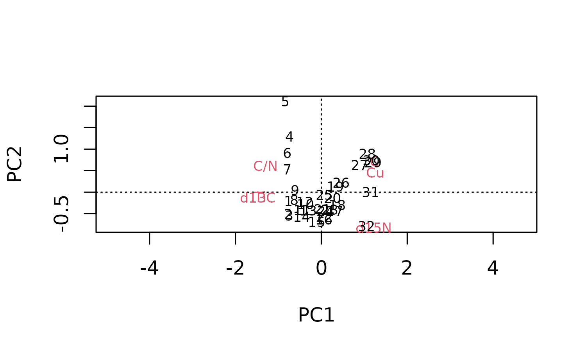

Nested analyses
Dewey Dunnington
2020-03-27
Source:vignettes/nested_analysis.Rmd
nested_analysis.RmdThese functions are experimental and may be removed in a future version!
Load the packages:
Creating nested data
Preparing the data:
alta_lake_geochem #> # A tibble: 192 x 9 #> location param depth age value stdev units n zone #> <chr> <chr> <dbl> <dbl> <dbl> <dbl> <chr> <int> <chr> #> 1 ALGC2 Cu 0.25 2015. 76 NA ppm 1 Zone 3 #> 2 ALGC2 Cu 0.75 2011. 108. 4.50 ppm 3 Zone 3 #> 3 ALGC2 Cu 1.25 2008. 158 NA ppm 1 Zone 3 #> 4 ALGC2 Cu 1.75 2003. 169 NA ppm 1 Zone 3 #> 5 ALGC2 Cu 2.5 1998. 161 NA ppm 1 Zone 3 #> 6 ALGC2 Cu 3.5 1982. 129 NA ppm 1 Zone 3 #> 7 ALGC2 Cu 4.5 1966. 88.7 3.86 ppm 3 Zone 2 #> 8 ALGC2 Cu 5.5 1947. 65 NA ppm 1 Zone 2 #> 9 ALGC2 Cu 6.5 1922. 62.3 9.53 ppm 3 Zone 2 #> 10 ALGC2 Cu 7.5 1896. 48 NA ppm 1 Zone 2 #> # … with 182 more rows
alta_nested <- nested_data( alta_lake_geochem, qualifiers = c(age, depth, zone), key = param, value = value, trans = scale ) alta_nested #> # A tibble: 1 x 4 #> discarded_columns discarded_rows qualifiers data #> * <list> <list> <list> <list> #> 1 <tibble [32 × 0]> <tibble [0 × 9]> <tibble [32 × 4]> <tibble [32 × 6]>
alta_nested %>% unnest(data) #> # A tibble: 32 x 9 #> discarded_colum… discarded_rows qualifiers C[,1] `C/N`[,1] Cu[,1] d13C[,1] #> <list> <list> <list> <dbl> <dbl> <dbl> <dbl> #> 1 <tibble [32 × 0… <tibble [0 × … <tibble [… -1.54 1.26 -0.794 1.03 #> 2 <tibble [32 × 0… <tibble [0 × … <tibble [… -1.59 1.36 -0.559 1.19 #> 3 <tibble [32 × 0… <tibble [0 × … <tibble [… -1.98 0.960 -0.721 1.10 #> 4 <tibble [32 × 0… <tibble [0 × … <tibble [… -0.189 1.61 -0.749 0.836 #> 5 <tibble [32 × 0… <tibble [0 × … <tibble [… 0.993 2.48 -0.694 1.06 #> 6 <tibble [32 × 0… <tibble [0 × … <tibble [… -0.157 1.76 -0.712 1.17 #> 7 <tibble [32 × 0… <tibble [0 × … <tibble [… -0.642 1.36 -0.667 1.07 #> 8 <tibble [32 × 0… <tibble [0 × … <tibble [… -1.07 0.924 -0.559 0.820 #> 9 <tibble [32 × 0… <tibble [0 × … <tibble [… -0.722 0.696 -0.830 0.765 #> 10 <tibble [32 × 0… <tibble [0 × … <tibble [… -0.631 0.309 -0.504 0.409 #> # … with 22 more rows, and 2 more variables: d15N[,1] <dbl>, Ti[,1] <dbl> alta_nested %>% unnest(c(qualifiers, data)) #> # A tibble: 32 x 12 #> discarded_colum… discarded_rows age depth zone row_number C[,1] `C/N`[,1] #> <list> <list> <dbl> <dbl> <chr> <int> <dbl> <dbl> #> 1 <tibble [32 × 0… <tibble [0 × … 1550 29.5 Zone… 1 -1.54 1.26 #> 2 <tibble [32 × 0… <tibble [0 × … 1566. 28.5 Zone… 2 -1.59 1.36 #> 3 <tibble [32 × 0… <tibble [0 × … 1581. 27.5 Zone… 3 -1.98 0.960 #> 4 <tibble [32 × 0… <tibble [0 × … 1597. 26.5 Zone… 4 -0.189 1.61 #> 5 <tibble [32 × 0… <tibble [0 × … 1613. 25.5 Zone… 5 0.993 2.48 #> 6 <tibble [32 × 0… <tibble [0 × … 1629. 24.5 Zone… 6 -0.157 1.76 #> 7 <tibble [32 × 0… <tibble [0 × … 1644. 23.5 Zone… 7 -0.642 1.36 #> 8 <tibble [32 × 0… <tibble [0 × … 1660. 22.5 Zone… 8 -1.07 0.924 #> 9 <tibble [32 × 0… <tibble [0 × … 1676. 21.5 Zone… 9 -0.722 0.696 #> 10 <tibble [32 × 0… <tibble [0 × … 1692. 20.5 Zone… 10 -0.631 0.309 #> # … with 22 more rows, and 4 more variables: Cu[,1] <dbl>, d13C[,1] <dbl>, #> # d15N[,1] <dbl>, Ti[,1] <dbl>
Principal components analysis
pca <- alta_nested %>% nested_prcomp() pca #> # A tibble: 1 x 8 #> discarded_colum… discarded_rows qualifiers data model variance loadings #> * <list> <list> <list> <lis> <lis> <list> <list> #> 1 <tibble [32 × 0… <tibble [0 × … <tibble [… <tib… <prc… <tibble… <tibble… #> # … with 1 more variable: scores <list>
plot(pca)

pca %>% unnest(c(qualifiers, scores)) #> # A tibble: 32 x 16 #> discarded_colum… discarded_rows age depth zone row_number data model #> <list> <list> <dbl> <dbl> <chr> <int> <lis> <lis> #> 1 <tibble [32 × 0… <tibble [0 × … 1550 29.5 Zone… 1 <tib… <prc… #> 2 <tibble [32 × 0… <tibble [0 × … 1566. 28.5 Zone… 2 <tib… <prc… #> 3 <tibble [32 × 0… <tibble [0 × … 1581. 27.5 Zone… 3 <tib… <prc… #> 4 <tibble [32 × 0… <tibble [0 × … 1597. 26.5 Zone… 4 <tib… <prc… #> 5 <tibble [32 × 0… <tibble [0 × … 1613. 25.5 Zone… 5 <tib… <prc… #> 6 <tibble [32 × 0… <tibble [0 × … 1629. 24.5 Zone… 6 <tib… <prc… #> 7 <tibble [32 × 0… <tibble [0 × … 1644. 23.5 Zone… 7 <tib… <prc… #> 8 <tibble [32 × 0… <tibble [0 × … 1660. 22.5 Zone… 8 <tib… <prc… #> 9 <tibble [32 × 0… <tibble [0 × … 1676. 21.5 Zone… 9 <tib… <prc… #> 10 <tibble [32 × 0… <tibble [0 × … 1692. 20.5 Zone… 10 <tib… <prc… #> # … with 22 more rows, and 8 more variables: variance <list>, loadings <list>, #> # PC1 <dbl>, PC2 <dbl>, PC3 <dbl>, PC4 <dbl>, PC5 <dbl>, PC6 <dbl> pca %>% unnest(variance) #> # A tibble: 6 x 13 #> discarded_colum… discarded_rows qualifiers data model component #> <list> <list> <list> <lis> <lis> <int> #> 1 <tibble [32 × 0… <tibble [0 × … <tibble [… <tib… <prc… 1 #> 2 <tibble [32 × 0… <tibble [0 × … <tibble [… <tib… <prc… 2 #> 3 <tibble [32 × 0… <tibble [0 × … <tibble [… <tib… <prc… 3 #> 4 <tibble [32 × 0… <tibble [0 × … <tibble [… <tib… <prc… 4 #> 5 <tibble [32 × 0… <tibble [0 × … <tibble [… <tib… <prc… 5 #> 6 <tibble [32 × 0… <tibble [0 × … <tibble [… <tib… <prc… 6 #> # … with 7 more variables: component_text <chr>, standard_deviation <dbl>, #> # variance <dbl>, variance_proportion <dbl>, #> # variance_proportion_cumulative <dbl>, loadings <list>, scores <list> pca %>% unnest(loadings) #> # A tibble: 6 x 14 #> discarded_colum… discarded_rows qualifiers data model variance variable #> <list> <list> <list> <lis> <lis> <list> <chr> #> 1 <tibble [32 × 0… <tibble [0 × … <tibble [… <tib… <prc… <tibble… C #> 2 <tibble [32 × 0… <tibble [0 × … <tibble [… <tib… <prc… <tibble… C/N #> 3 <tibble [32 × 0… <tibble [0 × … <tibble [… <tib… <prc… <tibble… Cu #> 4 <tibble [32 × 0… <tibble [0 × … <tibble [… <tib… <prc… <tibble… d13C #> 5 <tibble [32 × 0… <tibble [0 × … <tibble [… <tib… <prc… <tibble… d15N #> 6 <tibble [32 × 0… <tibble [0 × … <tibble [… <tib… <prc… <tibble… Ti #> # … with 7 more variables: PC1 <dbl>, PC2 <dbl>, PC3 <dbl>, PC4 <dbl>, #> # PC5 <dbl>, PC6 <dbl>, scores <list>
Constrained hierarchical clustering
keji_nested <- keji_lakes_plottable %>% group_by(location) %>% nested_data(qualifiers = depth, key = taxon, value = rel_abund) keji_nested %>% unnest(c(qualifiers, data)) #> # A tibble: 37 x 11 #> location discarded_colum… discarded_rows depth row_number `Asterionella r… #> <chr> <list> <list> <dbl> <int> <dbl> #> 1 Beavers… <tibble [17 × 0… <tibble [0 × … 0.125 1 0 #> 2 Beavers… <tibble [17 × 0… <tibble [0 × … 0.375 2 0 #> 3 Beavers… <tibble [17 × 0… <tibble [0 × … 0.825 3 1.32 #> 4 Beavers… <tibble [17 × 0… <tibble [0 × … 2.12 4 0.333 #> 5 Beavers… <tibble [17 × 0… <tibble [0 × … 3.12 5 0 #> 6 Beavers… <tibble [17 × 0… <tibble [0 × … 4.12 6 0 #> 7 Beavers… <tibble [17 × 0… <tibble [0 × … 5.38 7 0.987 #> 8 Beavers… <tibble [17 × 0… <tibble [0 × … 6.38 8 0.993 #> 9 Beavers… <tibble [17 × 0… <tibble [0 × … 7.62 9 1.63 #> 10 Beavers… <tibble [17 × 0… <tibble [0 × … 9.12 10 0.328 #> # … with 27 more rows, and 5 more variables: `Aulacoseira distans` <dbl>, #> # `Aulacoseira lirata` <dbl>, `Cyclotella stelligera` <dbl>, `Tabellaria #> # flocculosa (strain III)` <dbl>, Other <dbl>
coniss <- keji_nested %>% nested_chclust_coniss() plot(coniss, main = location)

plot(coniss, main = location, xvar = qualifiers$depth, labels = "")
coniss %>% select(location, zone_info) %>% unnest(zone_info) #> # A tibble: 4 x 12 #> location hclust_zone min_depth max_depth first_depth last_depth min_row_number #> <chr> <int> <dbl> <dbl> <dbl> <dbl> <dbl> #> 1 Beavers… 1 0.125 4.12 0.125 4.12 1 #> 2 Beavers… 2 5.38 23.4 5.38 23.4 7 #> 3 Peskawa… 1 0.125 5.12 0.125 5.12 1 #> 4 Peskawa… 2 6.38 35.1 6.38 35.1 6 #> # … with 5 more variables: max_row_number <dbl>, first_row_number <dbl>, #> # last_row_number <dbl>, boundary_depth <dbl>, boundary_row_number <dbl>
keji_nested %>% nested_chclust_coniss(n_groups = c(3, 2)) %>% select(location, zone_info) %>% unnest(zone_info) #> # A tibble: 5 x 12 #> location hclust_zone min_depth max_depth first_depth last_depth min_row_number #> <chr> <int> <dbl> <dbl> <dbl> <dbl> <dbl> #> 1 Beavers… 1 0.125 4.12 0.125 4.12 1 #> 2 Beavers… 2 5.38 13.6 5.38 13.6 7 #> 3 Beavers… 3 15.1 23.4 15.1 23.4 14 #> 4 Peskawa… 1 0.125 5.12 0.125 5.12 1 #> 5 Peskawa… 2 6.38 35.1 6.38 35.1 6 #> # … with 5 more variables: max_row_number <dbl>, first_row_number <dbl>, #> # last_row_number <dbl>, boundary_depth <dbl>, boundary_row_number <dbl>
Unconstrained hierarchical clustering
halifax_nested <- halifax_lakes_plottable %>% nested_data(c(location, sample_type), taxon, rel_abund, fill = 0) halifax_nested %>% unnest(c(qualifiers, data)) #> # A tibble: 20 x 11 #> discarded_colum… discarded_rows location sample_type row_number #> <list> <list> <chr> <chr> <int> #> 1 <tibble [20 × 0… <tibble [0 × … Anderso… bottom 1 #> 2 <tibble [20 × 0… <tibble [0 × … Anderso… top 2 #> 3 <tibble [20 × 0… <tibble [0 × … Bayers bottom 3 #> 4 <tibble [20 × 0… <tibble [0 × … Bayers top 4 #> 5 <tibble [20 × 0… <tibble [0 × … Bell La… bottom 5 #> 6 <tibble [20 × 0… <tibble [0 × … Bell La… top 6 #> 7 <tibble [20 × 0… <tibble [0 × … Cranber… bottom 7 #> 8 <tibble [20 × 0… <tibble [0 × … Cranber… top 8 #> 9 <tibble [20 × 0… <tibble [0 × … Frasers… bottom 9 #> 10 <tibble [20 × 0… <tibble [0 × … Frasers… top 10 #> 11 <tibble [20 × 0… <tibble [0 × … Kinsac … bottom 11 #> 12 <tibble [20 × 0… <tibble [0 × … Kinsac … top 12 #> 13 <tibble [20 × 0… <tibble [0 × … Little … bottom 13 #> 14 <tibble [20 × 0… <tibble [0 × … Little … top 14 #> 15 <tibble [20 × 0… <tibble [0 × … Little … bottom 15 #> 16 <tibble [20 × 0… <tibble [0 × … Little … top 16 #> 17 <tibble [20 × 0… <tibble [0 × … Maynard… bottom 17 #> 18 <tibble [20 × 0… <tibble [0 × … Maynard… top 18 #> 19 <tibble [20 × 0… <tibble [0 × … Miller … bottom 19 #> 20 <tibble [20 × 0… <tibble [0 × … Miller … top 20 #> # … with 6 more variables: `Aulacoseira distans` <dbl>, `Eunotia exigua` <dbl>, #> # `Fragilariforma exigua` <dbl>, `Tabellaria fenestrata` <dbl>, `Tabellaria #> # flocculosa (strain IV)` <dbl>, Other <dbl>
hclust <- halifax_nested %>% nested_hclust(method = "average") plot(hclust, labels = glue::glue("{qualifiers$location} ({qualifiers$sample_type})"))

Nested analysis of other functions
alta_nested %>% nested_analysis(vegan::rda, data) %>% plot()

biplot(pca)